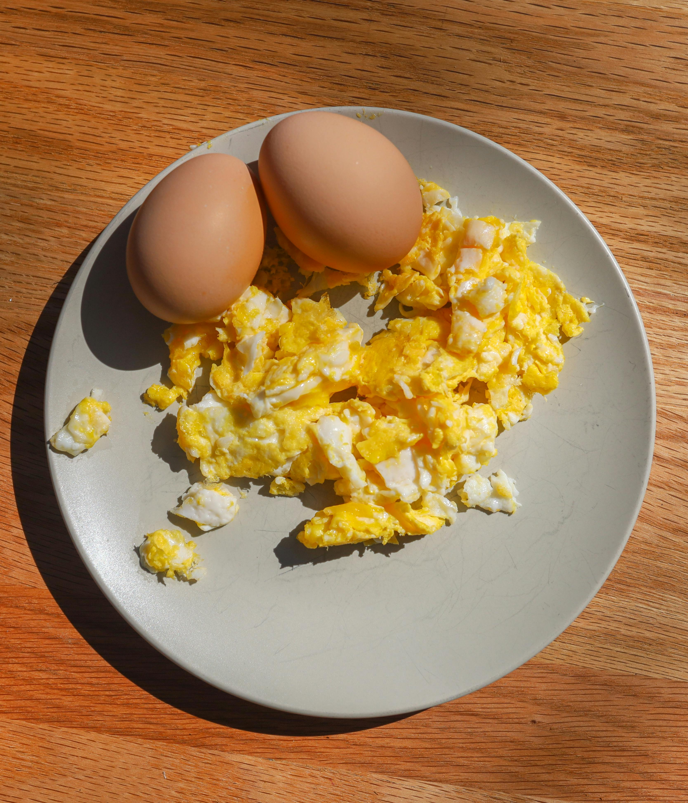

Scrambled Eggs

Photo by Luke Landon from Pexels: Photo
Description
This is a recipe for scrambled eggs. Something that even someone living in their parents' basement
could figure out how to cook.
Disclaimer: I am not liable for this recipe not working for you. I am not a cook.
Steps
- Crack eggs and put in a bowl.
- Whisk eggs.
- Add water if desired to make eggs fluffier.
- Pour eggs into a preheated pan on the stove. Stir and flip with spatula to ensure eggs are fully cooked.
- Once eggs look like scrambled eggs, turn off the stove and remove eggs.
- Add salt to taste.